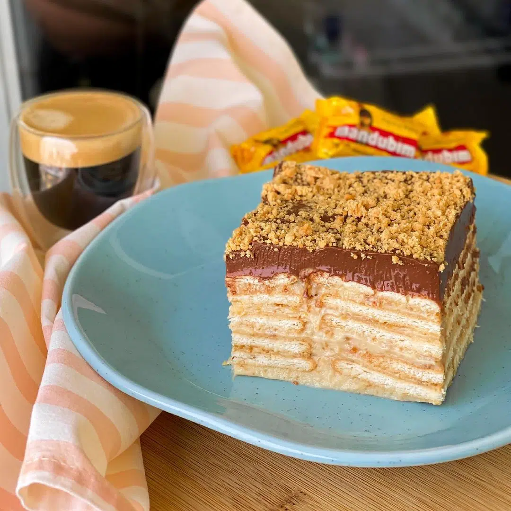

Pave $1500 CLP
Pavé consists of layers of gingerbread, condensed milk and chocolate.
The joke in Brazil is that pavê “e so pra ver” or “just to look at” because people fight to pile it on their plates.

Brigadeiros $2000 CLP
Brigadeiros is one of the most characteristic desserts of Brazil. They are prepared with condensed milk rolled in chocolate chips.
People often buy huge trays of brigadeiros for birthday parties or festive events.

Beijinhos $2000 CLP
Prepared with condensed milk, shredded desiccated coconut, topped with powdered sugar or shredded coconut, and often topped with a clove.
Beijinho is the coconut version of the Brazilian brigadeiro
Quindim $2000 CLP
Quindim is a delicious yellow colored dessert. It is prepared with grated coconut, egg yolks, coconut milk and sugar.
Mousse de Maracujá $3500 CLP
Passion fruit mousse is a typical mousse of Brazilian gastronomy that contains milk cream, condensed milk and concentrated passion fruit juice in its composition.

Pé de Moleque $4000 CLP
Pé-de-moleque, a peanut and rapadura confection, is made by mixing peanuts with melted sugar, which is then cooled and broken into irregular pieces.
Pé-de-moleque varies from recipe to recipe and can be light or dark, soft or very crunchy.